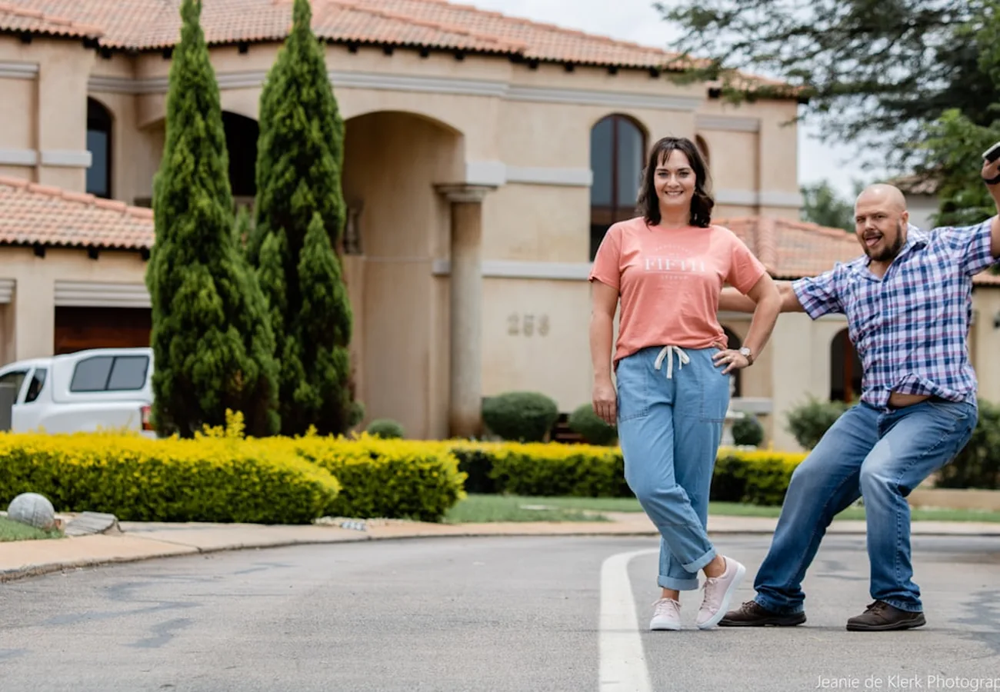

The nine steps from first search to keys, how title works in Arizona, and the ten terms that actually come up.
Before the steps
Buying in North Scottsdale is less about finding a house than about choosing between ten quite different ways to live. Troon North and Old Town are half an hour apart and have almost nothing in common.
Everything below is the guide Kathy hands buyers in print, produced with WFG National Title Insurance Company and laid out here so you can read it before the first showing rather than during the inspection period. It covers the full purchase process, the nine ways to take title in Arizona, and the ten terms that come up in every transaction.
You can also take the printed version with you.
None of it replaces advice on your specific situation. Take the title section in particular to your attorney or CPA before you vest.

Start where everyone starts. Get a feel for what your money buys in each of the ten communities, and note which ones you keep coming back to.

Before you fall for a house. An agent who knows these ten communities will tell you which listings are worth your Saturday and which are not.

In this market a pre-qualification letter is the price of admission. It also sets a real budget, which changes the search more than anything else does.
Photographs do not tell you about the road noise, the afternoon sun on the west side, or the neighbor’s RV. Walking them does.

Price is one term of several. Timing, contingencies, the inspection period and the close date can matter more to a seller, and that is where an offer gets won.
A neutral third party takes custody of the paperwork and the funds, and follows both sides’ instructions. Your earnest money goes here, not to the seller.
Your window to find out what you are actually buying. Findings become the basis for a repair request or a price adjustment, and occasionally for walking away.

The lender funds, the deed records with Maricopa County, and ownership moves. Title insurance issues at this point.

Keys. The part everything else was for.
Arizona specifics
How you vest affects what happens on death, on divorce and at tax time. It is a legal and tax question, not a real estate one. Kathy will flag it early so you have time to ask the right professional.
Before you tour
Troon North and Old Town are half an hour apart and have almost nothing in common. Kathy will tell you which of them fits how you actually spend a Saturday, before you spend six of them looking.
Ask herVocabulary
Every one of these turns up in an Arizona purchase. Open the ones you want.
A valuation of property by an appraiser’s estimate. The appraiser may use any number of valuation methods, including the current market value of similar properties, the quality of the property, and valuation models.
The yearly interest percentage of a loan as expressed by the actual rate of interest paid. The APR is disclosed as a requirement of federal truth-in-lending statutes.
An all-inclusive summary itemizing debits and credits to each party, seller and buyer, presented in the form of a balance sheet.
Money given by the buyer with an offer to purchase. It shows good faith.
A procedure in which a third party acts as a stakeholder for both buyer and seller, carrying out both parties’ instructions and assuming responsibility for handling all the paperwork and the distribution of funds.
An account held by the lender for payment of taxes, homeowner’s insurance and other periodic debts against real property, required to protect the lender’s security interest.
The instrument by which real estate is pledged as security for the repayment of a loan.
A repository of information on homes for sale. The MLS is also the means by which broker participants make offers of compensation to other broker participants for bringing a ready, willing and able buyer.
A payment that combines principal, interest, taxes and insurance.
Two policies generally issue at close of escrow: owner’s and lender’s. The owner’s policy protects the homeowner from defects in title, such as a forged deed. The lender’s policy protects the lender against the same defects until the loan is paid.
Yours to keep
The printed guide, the one Kathy gives clients at the first meeting. Produced with WFG National Title Insurance Company, so the title and escrow sections are the real thing rather than a summary of them.
A PDF, about 8 MB. There is an expanded edition here.
One step
She will send the guide and answer any question it raises. No drip sequence, no daily listing alerts.
On its way
If it did not, use this link. Kathy follows up personally, not automatically.
Answers
You can look without one, but you cannot compete without one. In the communities Kathy works, a well-priced listing can see multiple offers, and an offer without a lender letter attached reads as unserious.
Thirty to forty-five days is typical for a financed purchase in Maricopa County, less for cash. The inspection period sits in the first ten days or so, which is the part that moves fastest.
Finding out what you are buying. Findings become the basis for a repair request, a price adjustment or, occasionally, canceling. It is your leverage and it is time-limited.
It is negotiable and is usually agreed in the contract. Escrow is a neutral third party holding the paperwork and the funds and following both sides’ instructions.
Compensation is negotiable and is set out in a written buyer-broker agreement before you tour homes. Kathy will walk you through exactly what is agreed and who pays it before you sign.
In Desert Highlands, membership rights come with the property, so the club is part of the cost of ownership rather than an option. Whether that is good value depends entirely on whether you will use it. Ask before you tour.

Tell Kathy what your Saturdays look like and she will tell you which of the ten to start with.
Start with a conversation